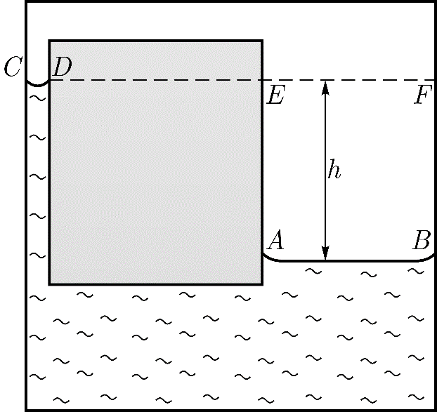
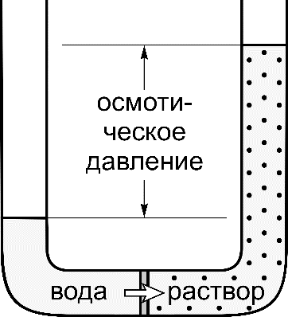
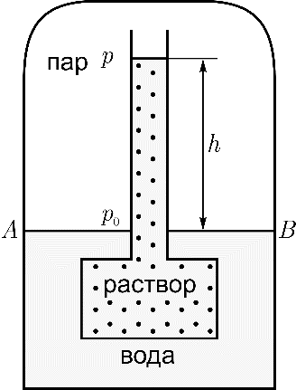

Y16 (2016) — English translation
Liquids can transform into solid and gaseous states - first-order phase transitions (that is, transitions associated with the absorption or release of heat). These transitions occur at constant temperatures. In tables, these temperatures are usually provided for normal conditions. But their meaning depends on many factors. In this problem it is proposed to consider some of them (only first-order phase transitions are considered).
The phase transition curve of a substance from the $1$ state to the $2$ state is described by the Clapeyron - Clausius equation $$\cfrac{dp}{dT}=\cfrac{q_{12}}{T(v_2-v_1)} $$где $p$ — давление, $T$ — температура, $q_{12}$ — удельная теплота фазового перехода $1\to{2}$, $v_1$,$v_2$—specific volumes.
It turns out that the phenomenon of surface tension $\sigma$ of a liquid can affect the saturated vapor pressure of a substance above a curved surface ($K$ is the curvature of the surface, the reciprocal of the radius of curvature).
In the next part of the problem, consider how the curvature of the liquid surface affects the vapor pressure. To solve, consider communicating cylindrical vessels placed in a thermostat maintaining a temperature $T$, (Fig. 1 - shows the case when the liquid wets the walls of the vessels) such that the width of one of the vessels allows the capillary effect to be observed. Vapor pressure above a flat surface $AB$ - $p_1$, above $CD$ - $p_2$, $K$ - surface curvature $CD$. Specific volume of liquid $v_L$, vapor $v_G$ (consider that the vapor density changes slightly as the height changes by $h$). Rice. 1. Saturated vapor pressure over a curved surface
In the next part of the problem, consider how the curvature of the liquid surface affects the vapor pressure. To solve, consider communicating cylindrical vessels placed in a thermostat maintaining a temperature $T$, (Fig. 1 - shows the case when the liquid wets the walls of the vessels) such that the width of one of the vessels allows the capillary effect to be observed. Vapor pressure above a flat surface $AB$ - $p_1$, above $CD$ - $p_2$, $K$ - surface curvature $CD$. Specific volume of liquid $v_L$, vapor $v_G$ (consider that the vapor density changes slightly as the height changes by $h$).

In the next part of the problem, it is proposed to consider how the conditions of phase transitions will change if any substance is dissolved in a liquid. The first thing to consider is osmosis - the process of one-way diffusion through a semi-permeable membrane. This membrane allows only solvent molecules to pass through. Solvent molecules diffuse to where the solute concentration is greater. Concentration of solvent molecules $n$, solute $n_s$. As a result of this phenomenon, osmotic pressure $p_{os}$ arises - excess pressure in the solution, at which the diffusion of solvent molecules stops. In Fig. Figure 2 shows an osmometer, a device for measuring osmotic pressure. Rice. 2. Osmometer
In the next part of the problem, it is proposed to consider how the conditions of phase transitions will change if any substance is dissolved in a liquid. The first thing to consider is osmosis - the process of one-way diffusion through a semi-permeable membrane. This membrane allows only solvent molecules to pass through. Solvent molecules diffuse to where the solute concentration is greater. Concentration of solvent molecules $n$, solute $n_s$. As a result of this phenomenon, osmotic pressure $p_{os}$ arises - excess pressure in the solution, at which the diffusion of solvent molecules stops. In Fig. Figure 2 shows an osmometer, a device for measuring osmotic pressure.

Consider how the saturated vapor pressure changes if a small amount of a substance is dissolved in a liquid. In Fig. 3, the solution and water are separated by a semi-permeable membrane, $p_0$ is the saturated vapor pressure above the water, $p$ is above the solution.
Consider how the saturated vapor pressure changes if a small amount of a substance is dissolved in a liquid. In Fig. 3, the solution and water are separated by a semi-permeable membrane, $p_0$ is the saturated vapor pressure above the water, $p$ is above the solution.

In the next part of the problem, consider three phases of matter ($1$ - liquid, $2$ - vapor, $3$ - solid, $q_{21}$, $q_{23}$, $q_{13}$ - specific heats released during transitions $2\to{1}$, $2\to{3}$ and $1\to{3}$, respectively, $q_{21}>0$, $q_{23}>0$, $q_{13}>0$). Consider the three-phase equilibrium point (triple point).
Source: https://pho.rs/p/3028